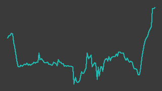

日本ナレッジ（5252）
東証グロース／レポート更新 2026-09-27
IR情報 ↗株探 ↗

画像判定※・6か月・基準日 2026-09-25一行でいうと：ソフトウェアテストの受託（検証事業）と大塚商会の ERP「SMILE」まわりの開発（開発事業）を営む、技術者の人月売りの IT 企業。売上は伸び続けているが営業利益は2期続けて減り、今期は倍増の会社計画を掲げる。2026-09-25 にビジネスブレイン太田昭和（BBS）との資本提携と第三者割当（希薄化24.6%）を発表した。利益の勢いを四半期で測れず（screen の NO_QUARTERLY）、流動性ゲートにも届かないため、名指しできる状態ではない。
週次アップデート最新 2026-W39・全 1 件
新しい週を上に置いている。過去の記述は書き換えず、そのまま残している。
2026-W39（2026-09-21 週）
引け後に BBS への第三者割当（発行価格917円・希薄化24.6%）と資本提携を発表。株価の反応は来週から。
- 今週の採用終値は 9/24 1,019円✓、9/25 1,024円✓（週2営業日。9/21〜23 は休場）。9/25 の 1,024円✓ は台帳にある採用終値の最高値。9/2〜3 の 730円✓ から約3週間で約4割上がっているが、その間（8/21〜9/24）に会社の開示は無く、上昇の理由は特定できていない（開示一覧: https://kabutan.jp/stock/news?code=5252 、2026-09-27取得）
- 9/25 16:00 の開示（一次情報・TDnet: https://tdnet-pdf.kabutan.jp/20260925/140120260925540233.pdf 、2026-09-27取得）の要点:
- BBS（東証プライム上場）に新株 1,021,000株を 1株917円で割り当てる。払込 2026-11-02、調達額 約9.4億円（差引手取 約9.3億円）
- 発行価格は前営業日（9/24）終値 1,019円の 90%。直前1か月の終値平均（840.60円）比では 9.08% のプレミアム
- 希薄化は総議決権比 24.60%（7月決議の譲渡制限付株式報酬と合算で 24.92%）
- 使途は AI 関連事業・人材育成 3.3億円、M&A・事業拠点拡充 6.0億円（支出予定 2026-11〜2031-03）
- 筆頭株主（代表取締役社長・常務取締役の資産管理会社ウィステリアトラスト）が 35,000株を 917円で BBS に売り出す。BBS の保有は議決権比 20.36% となり、日本ナレッジは BBS の持分法適用関連会社になる見込み。BBS は 20% 以上を保つ限り非常勤取締役1名の指名権を持つ
- 読み方: 中計の成長投資17億円（2027/3〜2029/3期）を「借入に囚われない資金調達」で賄う方針（中計資料 https://tdnet-pdf.kabutan.jp/20260219/140120260217564019.pdf 、2026-09-27取得）の実行と読める。現金 628百万円（6月末・一次情報）に対し調達額はその1.5倍で、財務の余力は大きく増す。一方、1株あたりの利益は約2割薄まるため、計画どおりの利益でも1株益は増資前の計画 25.43円（短信の予想値）より下がる可能性がある（増資後の1株益予想は会社から出ていない。推測）
- 取得: 株価・財務は 2026-09-27 に fetch 済み。信用買残は 9/18 時点 418.3千株※（売残0）
次週に見ること：①増資発表への株価の反応（発行価格917円との距離）②増資後の業績予想・1株益予想の修正開示の有無 ③9月の上昇に説明の付く材料が後から出るか
次期売上・利益推定対象 FY2027-03・作成済み・変数 3 個
作成済み 対象期 FY2027-03・起案 2026-09-27。検証済みデータと明示した仮定から機械計算した概算であり、会社計画でも的中予想でもない。推定 の付いた変数を疑うための頁。
会社計画・市場予想・実績との比較（百万円）
| 指標 | 前期実績 | 会社計画 | 市場予想 | 当台帳推定 | 市場予想比 |
|---|---|---|---|---|---|
| 売上 | 4,558 | 5,000 | — | 5,057 | — |
| 営業利益 | 65 | 150 | — | 126 | — |
市場予想: アナリストコンセンサスを確認できず。株予報Pro（https://kabuyoho.jp/reportTop?bcode=5252、2026-09-27取得）のアナリスト予想欄は数値が「--」で空。 みんかぶ（https://minkabu.jp/stock/5252/analyst_consensus）は 2026-09-27 に取得を試みたが 403 で読めなかった。比較対象は会社計画のみ
計算の分解
| セグメント | 式（値を代入） | 売上（百万円） |
|---|---|---|
| 通期（1Q売上×年率換算。検証＋開発の合計） | 1,204 × 4.2 = 5,056.8 | 5,057 |
変数と根拠
カードを押すと、その値の置き方（メモ・出典）が開く。推定 の変数から疑うこと。
通期（1Q売上×年率換算。検証＋開発の合計）q1_revenue1204実績
data/fundamentals/5252.csv通期（1Q売上×年率換算。検証＋開発の合計）annualize4.2推定
全社op_margin0.025推定
感度 — この推定を最も動かす変数
各変数を +10% したときの営業利益の変化。上にある変数ほど、根拠を厚く確かめる価値がある。ただし op_margin だけは別扱い——営業利益 = 売上合計 × op_margin なので +10% は定義上つねに +10% になり、売上側の変数と大小を比べても意味が無い。
| 変数 | セグメント | 営業利益への影響 |
|---|---|---|
op_margin | 全社 定義上 | +10.0% 乗法モデルなので定義上つねに +10%。売上側の変数との大小比較には意味が無い（率の水準そのものを疑うこと） |
annualize | 通期（1Q売上×年率換算。検証＋開発の合計） | +10.0% |
q1_revenue | 通期（1Q売上×年率換算。検証＋開発の合計） | +10.0% |
推定の変遷
過去の版は書き換えずに残す。数値感がどう変わってきたかが学習の履歴になる。
| 起案日 | 対象期 | 売上 | 営業利益 | 何を変えたか |
|---|---|---|---|---|
| 2026-09-27 | FY2027-03 | 5,057 | 126 | 初版（Claude 起案・人間未確認）。事業は検証事業（ソフトウェアテスト・品質保証の受託）と開発事業（受託開発・パッケージ）の2つで、 FY2026-03 の売上構成は検証 2,618・開発 1,941 百万円（57:43。株予報Pro https://kabuyoho.jp/reportTop?bcode=5252 、2026-09-27取得。 一次情報とは未照合）。どちらも技術者の人月売りで、分解するなら 技術者数×稼働率×単価 だが、人数・単価の開示を確認できていないため セグメント別には組まず、今期1Q実績×年率換算の1区分で置く（四半期のセグメント別売上も未確認）。 会社計画は売上高 5,000・営業利益 150 百万円（fundamentals の採用値。前期比 +9.7%・+130.8%）。 1Q（4〜6月）は売上 1,204（前年同期 1,061 比 +13.5%）で、人員投資の人件費増により営業損失 -6（前年同期 -23）。 推定は売上がほぼ計画並み、営業利益は計画を下回る側。利益率の仮定が最も効く |
会社概要この会社は何者か・財務の推移と健全性・今後の展望とリスク・値動きと市場の評価・出典・検証の記録
この会社は何者か
1985年10月創業（一次情報：9/25 開示）。事業は2つのセグメントに分かれる（2027/3期 1Q 決算短信・一次情報）。
- 検証事業：システム開発の各工程でテストの計画・設計・実行・プロセス改善提案を受託する、いわゆる第三者検証。独自のテスト自動化ツール（「digitest(仮)」β版を2025-11に提供開始）や、ISO9001 と統合したテスト自動化アセスメント（2025-11）で差別化を図っている。1Q の外部売上 718百万円※・セグメント利益 105百万円※
- 開発事業：自社パッケージの販売・カスタマイズと受託開発が中心で、大塚商会の ERP「SMILE シリーズ」の開発・カスタマイズ（鋼材業・木材業向け業種テンプレートを自社開発）が軸。セキュリティ製品の販売・保守も含む。1Q の外部売上 486百万円※・セグメント利益 63百万円※
- 全社費用（セグメントに配賦しない本社費）が 1Q で 175百万円※ あり、2セグメントの利益合計 169百万円※ をほぼ食い切る構造（※はいずれも決算短信 PDF から直接読んだ値で、台帳の2ソース照合を通していない）
どちらも技術者の稼働を売る人月型のビジネスで、売上は人数×稼働率×単価、利益は人件費の伸びとの競争で決まる。
2025-10-01 にソフトウェア開発会社アルテックスを完全子会社化し（直近期売上 201百万円※・一次情報：2025-09-19 開示）、2026/3期の3Qから連結決算に移った。長野県下諏訪町に「新諏訪センター」（2024年9月操業）を持ち、地域での人材育成を掲げる。2026-05 に BBS と業務提携、2026-09 に資本提携へ進めた（週次アップデート参照）。
財務の推移と健全性
出所: data/fundamentals/5252.csv の採用値（別サイト2つ以上が一致した値だけ）。5/5点を採用。
出所: data/fundamentals/5252.csv の採用値（別サイト2つ以上が一致した値だけ）。5/5点を採用。
下の表の数値はすべて2ソース照合済みの採用値（✓）。2027/3期予は会社計画（採用値）。2025/3期までは単体、2026/3期は3Qから連結で、厳密には連続しない。
| 項目 | 2023/3期（百万円） | 2024/3期（百万円） | 2025/3期（百万円） | 2026/3期（百万円） | 2027/3期予（百万円） |
|---|---|---|---|---|---|
| 売上高 | 3550 | 4076 | 4154 | 4558 | 5000 |
| 営業利益 | 203 | 250 | 99 | 65 | 150 |
| 経常利益 | 191 | 266 | 115 | 128 | 157 |
| 純利益 | 137 | 202 | 82 | 86 | 105 |
- 増収減益が2期続いた。 売上高は4期続けて増えたが、営業利益は 2024/3期の 250百万円✓ から 2025/3期 99百万円✓、2026/3期 65百万円✓ と減った。営業利益率は 6.1% → 2.4% → 1.4%（採用値からの計算）。会社は人材確保と待遇改善による人件費増を理由に挙げている（1Q 決算短信）
- 2026/3期の経常利益 128百万円✓ が営業利益を大きく上回るのは、長野県 ICT 産業立地助成金 42.5百万円※ を営業外収益に計上したため（一次情報：2026-05-15 開示）。本業の稼ぐ力は営業利益で見るべきと読める
- 今期計画は営業利益 150百万円✓（前期比 +130.8%）。売上高 5,000百万円✓（+9.7%）に対し利益率を 3.0% に戻す計画
- 中計（2027/3〜2029/3期）の最終年度目標は連結売上高 62.0億円・営業利益 3.0億円・営業利益率 5.0%（一次情報：2026-02-19 開示）
出所: data/fundamentals/5252.csv の採用値（別サイト2つ以上が一致した値だけ）。9/9点を採用。
- 利益は4Q（1〜3月）に偏り、1Q（4〜6月）は3年続けて営業赤字。 1Q の営業利益は -37 → -23 → -6百万円✓ と赤字幅は縮んでいる。前期は 4Q だけで 96百万円✓ を稼ぎ、通期 65百万円✓ を上回った
- 今期1Q の売上高 1,204百万円✓ は前年同期 1,061百万円✓ 比 +13.5%。ただし前年同期は単体・今期は連結で、アルテックス分が上乗せされている。同社の直近期売上（201百万円※）を4で割った約50百万円を差し引くと、既存事業の伸びは +9% 前後と推測される（assumed: true。根拠はアルテックスの年売上を四半期に均等割りしたこと。四半期別の子会社売上は開示を確認できていない）
- 上期計画は営業利益 34百万円※（台帳は1ソースのみ。決算短信にも同値の記載あり）。1Q が -6百万円✓ なので、2Q（7〜9月）単独で約40百万円が要る。過去2年の 2Q は 9.8百万円✓・-11百万円✓ で、これまでの季節性からはかなり高いハードルと読める
| 期 | 自己資本比率（%） | 営業キャッシュフロー（百万円） | 現金同等物（百万円） |
|---|---|---|---|
| 2024/3期 | 51.1 | 127 | 782 |
| 2025/3期 | 53.6 | 53 | 672 |
| 2026/3期 | 53.5 | 56 | 605 |
上の表もすべて採用値（✓）。
- 自己資本比率は 5割強で安定。6月末は 53.4%※。借入金（短期・長期の合計）は約382百万円※、のれんは 64百万円※（いずれも 1Q 決算短信）
- 現金同等物は3期続けて減っている。営業CFが 50百万円台✓ に細る一方で、事業所建設や子会社取得の支出があったと読める（投資CFの内訳は未確認）。9/25 発表の増資（約9.3億円）が 11/2 に払い込まれれば、この流れは一度リセットされる
今後の展望とリスク
screen の判定：python src/screen.py（2026-09-27）で NO_QUARTERLY（四半期の採用値で伸びを測れない）の警告。直近Q（1Q）は前年同期も今期も営業赤字で前年比が定義できず、その前の Q（4Q）は +28.0%、通期実績は -34.3%、会社計画は +130.8%。この警告が付いている間は「有望」と名指ししない。
流動性：直近20営業日の平均売買代金は約16百万円※（採用終値×出来高。出来高は1ソース）で、台帳の流動性ゲート（30百万円）に届かない。判定が正しくても建てにくく降りにくい規模。
展望（読み）
- 今期は「人件費の先行投資で利益率を落とした2年」から、計画どおり利益率3%に戻せるかの年。1Q の赤字幅縮小は前向きな材料だが、利益の大半は例年 4Q に出るので、2Q・3Q の段階では判断材料が乏しい
- 推定モデル（
estimates/5252.yaml、2026-09-27 版）は、売上をほぼ計画並み（1Q×4.2倍で約50.6億円）、営業利益率を 2.5%（約1.3億円）と置き、利益は計画をやや下回る側に見ている（assumed: true。根拠は同ファイルの basis）。なお同モデルの「1Q売上 +13.5%」は単体→連結の比較で、子会社の上乗せを含む点に注意 - BBS との提携は、BBS の顧客基盤（経営会計コンサル・システム構築・BPO）に検証・AI 品質保証を載せる構想（2026-05-15 開示）。受注にどれだけ結び付くかは数字でまだ確認できない
- 調達資金のうち 6.0億円は M&A・拠点拡充向け。人月型の会社にとって M&A は技術者数を一度に増やす手段で、アルテックスに続く買収が出る可能性がある（推測）
リスク
- 希薄化：発行済株式の約4分の1に当たる新株が出る。1株あたりの利益・純資産は薄まる
- 支配関係の変化：BBS が議決権20%超の筆頭級株主となり、取締役1名の指名権を持つ。少数株主から見た経営の独立性の変化
- 人件費の先行：採用・待遇改善のコストが売上の伸びを上回り続ければ、計画の利益率回復は遅れる
- 顧客・取引先の集中：開発事業は大塚商会の SMILE 関連が中心で、特定のエコシステムへの依存度が高いと読める（売上の取引先別比率は未確認）
- 4Q 偏重：通期の利益が1四半期の出来に左右されやすい
- 流動性：上記のとおり売買代金が小さい
値動きと市場の評価
出所: data/prices/daily.csv の採用終値（2つの取得元が一致した終値だけ）。ザラ場の高値・安値は照合を通っていないので使っていない。3/3点を採用、52週の採用終値 238営業日。安値 2025-12-08 / 高値 2026-09-25 / 現在 2026-09-25。
- 2026-09-25 の採用終値 1,024円✓ は、台帳にある採用終値（2025-09-29 以降）の最高値。安値は 2025-12-08 の 475円✓
- 主な節目（株探の見出し。二次情報・出典節参照）：
- 2025-10-01：創業40周年の記念配当と記念株主優待の発表で急伸（採用終値 487円✓ → 567円✓）
- 2026-02 中旬〜下旬：中期経営計画の公表（2/19）を受けて続伸（2/17 746円✓ → 2/20 868円✓）
- 2026-09 上旬〜：730円✓（9/3）から 1,024円✓（9/25）まで上昇。理由は特定できていない
- 市場の評価（日経・二次情報、2026-09-25 終値ベース）：時価総額 約42.6億円※、予想PER 40.6倍※、PBR 3.70倍※、予想配当利回り 0.68%※。人月型 IT 受託としては利益に対して高い評価で、利益率回復と AI 関連の成長を先取りしている水準と読める
- 配当は前期 10円（期末）、今期予想 7円（1Q 決算短信・一次情報）。中計は「1株7円の配当を継続」を掲げ、株主還元の主目的は株価上昇としている
- 信用取引：買残 418.3千株※（2026-09-18）、売残 0。発行済株式（約415万株）の約1割に当たる買い残があり、上値で戻り売りが出やすい需給と読める
- アナリストのコンセンサスは確認できていない（
estimates/5252.yamlの market_forecast 参照）
出典
凡例: ✓=2ソース照合済みの採用値 ／ ※=未照合・参考値 ／ †=決算短信（一次情報）から直接
| 区分 | 出典 | 取得日 | 使った箇所 |
|---|---|---|---|
| 一次 | 資本提携・第三者割当・売出し・主要株主異動（2026-09-25）https://tdnet-pdf.kabutan.jp/20260925/140120260925540233.pdf | 2026-09-27 | 週次・何者か・リスク |
| 一次 | 2027年3月期 第1四半期決算短信（2026-08-14）https://tdnet-pdf.kabutan.jp/20260814/140120260814520598.pdf | 2026-09-27 | セグメント・財政状態・配当・上期計画 |
| 一次 | BBS との業務提携（2026-05-15）https://tdnet-pdf.kabutan.jp/20260515/140120260507518628.pdf | 2026-09-27 | 展望 |
| 一次 | 営業外収益（補助金収入）の計上（2026-05-15）https://tdnet-pdf.kabutan.jp/20260515/140120260515536409.pdf | 2026-09-27 | 財務 |
| 一次 | 中期経営計画（2026-02-19）https://tdnet-pdf.kabutan.jp/20260219/140120260217564019.pdf | 2026-09-27 | 財務・週次・値動き |
| 一次 | アルテックスの株式取得（2025-09-19）https://tdnet-pdf.kabutan.jp/20250919/140120250916558473.pdf | 2026-09-27 | 何者か・財務 |
| 一次 | 株式分割（1株→3株、効力 2025-10-01）（2025-09-10）https://tdnet-pdf.kabutan.jp/20250910/140120250902551893.pdf | 2026-09-27 | 出典（未確認事項） |
| 一次 | 企業IR https://www.know-net.co.jp/ir | 2026-09-27 | リンク |
| 台帳 | data/fundamentals/5252.csv（kabutan・IR BANK の照合） |
2026-09-27 | 財務の表・図 |
| 台帳 | data/prices/daily.csv（kabutan・Yahoo の照合）／data/margin/5252.csv |
2026-09-27 | 値動き |
| 二次 | 株探 開示・ニュース一覧 https://kabutan.jp/stock/news?code=5252 | 2026-09-27 | 開示の有無・節目の見出し |
| 二次 | 株探「第三者割当増資の実施を発表」https://kabutan.jp/news/marketnews/?b=n202609251003 | 2026-09-27 | 週次 |
| 二次 | 日経 会社情報 https://www.nikkei.com/nkd/company/?scode=5252 | 2026-09-27 | 時価総額・PER・PBR・利回り |
未確認・人間に上げること
data/prices/daily.csvの 2025-09-30 以前の終値（例 2025-09-29 495円）は、1株→3株の分割（効力 2025-10-01）前の生の値なら約3倍になるはずで、両ソースとも分割調整後の値を返している可能性がある（不変条件「生終値のみ」との関係を要確認。data はこのエージェントでは直していない）- 1株あたり純資産の 2024/3・2025/3期が MISMATCH（分割前後の基準の違いが原因と見られる）
- 2Q 決算の発表予定日（master.yaml の next_earnings が未設定。例年11月中旬）
- 前期配当 10円のうち記念配当の内訳、取引先別の売上比率、投資CFの内訳、IPO の日付・価格
- 9月上旬からの株価上昇の理由
記述の裏取り
本文の記述を、書いたのとは別の文脈が出典URLを取り直して1件ずつ判定した結果（読み方）。
検証日 2026-09-27検証した記述 52裏付けあり 29この出典では確かめられない（別の出典が要る） 1出典と食い違う 1確かめられない（到達不可・出典なし） 21再取得した出典 12
裏が取れなかった記述
出典を取り直しても確かめられなかったもの。本文に残っているが、確認済みとして読んではいけない。
| 判定 | 本文の記述 | 再取得して分かったこと | 出典 | どうするか |
|---|---|---|---|---|
| 出典と食い違う | その間（8/20〜9/24）に会社の開示は無く | 株探ニュース一覧を再取得（200）。「26/08/20 15:00 | 開示 | 譲渡制限付株式報酬としての新株式の発行の払込完了に関するお知らせ」があり、本文が示す期間 8/20〜9/24 の中に開示が1件ある。8/21〜9/24 には開示の行は無い（次は「26/09/25 16:00 | 開示 | 株式会社ビジネスブレイン太田昭和との資本提携契約の締結…」）。 | 二次情報 出典 ↗ | 期間を「8/21〜9/24」に直すか「8/20 の株式報酬払込完了の開示を除き」と書く。直したら resolutions に記録する |
| 確かめられない（到達不可・出典なし） | BBS（東証プライム上場）に新株 1,021,000株を 1株917円で割り当てる。払込 2026-11-02、調達額 約9.4億円（差引手取 約9.3億円） | TDnet PDF は再取得（200・application/pdf）したが fetch_source.py はテキスト化しない（本文82文字）。data/tanshin/5252.csv は存在しない。確かめる材料が無い。 株探記事（200）は開示の表題のみで、株数・価格・払込日・金額の記載は無い。 | 一次情報 出典 ↗ | テキストで読める一次情報（会社IRのHTML版・EDINET等）を出典に足すか、本文で「未確認」と扱う |
| 確かめられない（到達不可・出典なし） | 発行価格は前営業日（9/24）終値 1,019円の 90% | 9/24 の採用終値 1019 は data/prices/daily.csv で確認。発行価格 917円は PDF がテキスト化できず確かめられない（917/1019=0.8999、917/840.60-1=+9.088% で本文の 90%・9.08% とは整合するが、917 自体の裏付けにはならない）。 | 一次情報 出典 ↗ data/prices/daily.csv | テキストで読める一次情報（会社IRのHTML版・EDINET等）を出典に足すか、本文で「未確認」と扱う |
| 確かめられない（到達不可・出典なし） | 希薄化は総議決権比 24.60%（7月決議の譲渡制限付株式報酬と合算で 24.92%） | TDnet PDF は再取得（200・application/pdf）したが fetch_source.py はテキスト化しない（本文82文字）。data/tanshin/5252.csv は存在しない。確かめる材料が無い。 株探ニュース一覧に「26/07/22 15:00 | 開示 | 譲渡制限付株式報酬としての新株式の発行に関するお知らせ」はあるが、比率は確かめられない。 | 一次情報 出典 ↗ | テキストで読める一次情報（会社IRのHTML版・EDINET等）を出典に足すか、本文で「未確認」と扱う |
| 確かめられない（到達不可・出典なし） | 使途は AI 関連事業・人材育成 3.3億円、M&A・事業拠点拡充 6.0億円（支出予定 2026-11〜2031-03） | TDnet PDF は再取得（200・application/pdf）したが fetch_source.py はテキスト化しない（本文82文字）。data/tanshin/5252.csv は存在しない。確かめる材料が無い。 | 一次情報 出典 ↗ | テキストで読める一次情報（会社IRのHTML版・EDINET等）を出典に足すか、本文で「未確認」と扱う |
| 確かめられない（到達不可・出典なし） | 筆頭株主（代表取締役社長・常務取締役の資産管理会社ウィステリアトラスト）が 35,000株を 917円で BBS に売り出す | TDnet PDF は再取得（200・application/pdf）したが fetch_source.py はテキスト化しない（本文82文字）。data/tanshin/5252.csv は存在しない。確かめる材料が無い。 株探の開示表題に「株式の売出し並びに主要株主等の異動」とあるのみで、売出人・株数・価格は確かめられない。 | 一次情報 出典 ↗ | テキストで読める一次情報（会社IRのHTML版・EDINET等）を出典に足すか、本文で「未確認」と扱う |
| 確かめられない（到達不可・出典なし） | 日本ナレッジは BBS の持分法適用関連会社になる見込み | TDnet PDF は再取得（200・application/pdf）したが fetch_source.py はテキスト化しない（本文82文字）。data/tanshin/5252.csv は存在しない。確かめる材料が無い。 | 一次情報 出典 ↗ | テキストで読める一次情報（会社IRのHTML版・EDINET等）を出典に足すか、本文で「未確認」と扱う |
| 確かめられない（到達不可・出典なし） | 中計の成長投資17億円（2027/3〜2029/3期）を「借入に囚われない資金調達」で賄う方針 | TDnet PDF は再取得（200・application/pdf）したが fetch_source.py はテキスト化しない（本文82文字）。data/tanshin/5252.csv は存在しない。確かめる材料が無い。 | 一次情報 出典 ↗ | テキストで読める一次情報（会社IRのHTML版・EDINET等）を出典に足すか、本文で「未確認」と扱う |
| 確かめられない（到達不可・出典なし） | 現金 628百万円（6月末・一次情報） | TDnet PDF は再取得（200・application/pdf）したが fetch_source.py はテキスト化しない（本文82文字）。data/tanshin/5252.csv は存在しない。確かめる材料が無い。 data/fundamentals/5252.csv に Q2026-04_2026-06 の cash_equivalents 行は無い。 | 一次情報 出典 ↗ | src/fetch_tanshin.py で 5252 の決算短信を data/tanshin/5252.csv に取り込み、次の verify で照合する（それまで本文は「未確認」扱い） |
| 確かめられない（到達不可・出典なし） | 1株あたりの利益は約2割薄まるため、計画どおりの利益でも1株益は増資前の計画 25.43円（短信の予想値）より下がる | TDnet PDF は再取得（200・application/pdf）したが fetch_source.py はテキスト化しない（本文82文字）。data/tanshin/5252.csv は存在しない。確かめる材料が無い。 なお台帳の採用値 FY2027-03 eps_plan=25.2（kabutan_fy 25.2 / kabutan_fy10 25.2、status OK）で、25.43 とは一致しない（25.43 は四捨五入で 25.4）。 | 一次情報 出典 ↗ data/fundamentals/5252.csv | 短信の1株当たり予想当期純利益を data/tanshin に取り込み、25.43円と採用値 25.2円のどちらが短信の記載かを人間が確かめる |
| 確かめられない（到達不可・出典なし） | 1985年10月創業（一次情報：9/25 開示） | TDnet PDF は再取得（200・application/pdf）したが fetch_source.py はテキスト化しない（本文82文字）。data/tanshin/5252.csv は存在しない。確かめる材料が無い。 | 一次情報 出典 ↗ | テキストで読める一次情報（会社IRのHTML版・EDINET等）を出典に足すか、本文で「未確認」と扱う |
| 確かめられない（到達不可・出典なし） | 1Q の外部売上 718百万円※・セグメント利益 105百万円※ | TDnet PDF は再取得（200・application/pdf）したが fetch_source.py はテキスト化しない（本文82文字）。data/tanshin/5252.csv は存在しない。確かめる材料が無い。 | 一次情報 出典 ↗ | src/fetch_tanshin.py で 5252 の決算短信を data/tanshin/5252.csv に取り込み、次の verify で照合する（それまで本文は「未確認」扱い） |
| 確かめられない（到達不可・出典なし） | 1Q の外部売上 486百万円※・セグメント利益 63百万円※ | TDnet PDF は再取得（200・application/pdf）したが fetch_source.py はテキスト化しない（本文82文字）。data/tanshin/5252.csv は存在しない。確かめる材料が無い。 | 一次情報 出典 ↗ | src/fetch_tanshin.py で 5252 の決算短信を data/tanshin/5252.csv に取り込み、次の verify で照合する（それまで本文は「未確認」扱い） |
| 確かめられない（到達不可・出典なし） | 全社費用（セグメントに配賦しない本社費）が 1Q で 175百万円※ あり、2セグメントの利益合計 169百万円※ をほぼ食い切る構造 | TDnet PDF は再取得（200・application/pdf）したが fetch_source.py はテキスト化しない（本文82文字）。data/tanshin/5252.csv は存在しない。確かめる材料が無い。 本文自身のセグメント利益 105+63=168 で「169」と1ずれる（百万円未満の端数なら起こりうるが確かめられない）。採用値 Q2026-04_2026-06 operating_income=-6 は 169-175=-6 と整合する。 | 一次情報 出典 ↗ | src/fetch_tanshin.py で 5252 の決算短信を data/tanshin/5252.csv に取り込み、次の verify で照合する（それまで本文は「未確認」扱い） |
| 確かめられない（到達不可・出典なし） | 2025-10-01 にソフトウェア開発会社アルテックスを完全子会社化し（直近期売上 201百万円※・一次情報：2025-09-19 開示） | TDnet PDF は再取得（200・application/pdf）したが fetch_source.py はテキスト化しない（本文82文字）。data/tanshin/5252.csv は存在しない。確かめる材料が無い。 株探ニュース一覧の1ページ目は 26/05/29 までで、2025-09 の開示は載っていない。 | 一次情報 出典 ↗ | テキストで読める一次情報（会社IRのHTML版・EDINET等）を出典に足すか、本文で「未確認」と扱う |
| 確かめられない（到達不可・出典なし） | 長野県 ICT 産業立地助成金 42.5百万円※ を営業外収益に計上したため（一次情報：2026-05-15 開示） | TDnet PDF は再取得（200・application/pdf）したが fetch_source.py はテキスト化しない（本文82文字）。data/tanshin/5252.csv は存在しない。確かめる材料が無い。 採用値 ordinary_income 128 − operating_income 65 = 63 で営業外が大きいことは事実だが、内訳は確かめられない。 | 一次情報 出典 ↗ | テキストで読める一次情報（会社IRのHTML版・EDINET等）を出典に足すか、本文で「未確認」と扱う |
| 確かめられない（到達不可・出典なし） | 中計（2027/3〜2029/3期）の最終年度目標は連結売上高 62.0億円・営業利益 3.0億円・営業利益率 5.0% | TDnet PDF は再取得（200・application/pdf）したが fetch_source.py はテキスト化しない（本文82文字）。data/tanshin/5252.csv は存在しない。確かめる材料が無い。 株探記事の関連見出し「日本ナレッジは４日続伸、中計を評価 (26/02/20)」で中計公表は確認できるが、目標値は確かめられない。 | 一次情報 出典 ↗ | テキストで読める一次情報（会社IRのHTML版・EDINET等）を出典に足すか、本文で「未確認」と扱う |
| 確かめられない（到達不可・出典なし） | 上期計画は営業利益 34百万円※（台帳は1ソースのみ。決算短信にも同値の記載あり） | data/fundamentals の H2026-04_2026-09 operating_income_plan=34 は SINGLE_SOURCE（kabutan_half）で採用値ではなく裏付けに使えない。「決算短信にも同値」は PDF がテキスト化できず確かめられない。 | 一次情報 出典 ↗ data/fundamentals/5252.csv | src/fetch_tanshin.py で 5252 の決算短信を data/tanshin/5252.csv に取り込み、次の verify で照合する（それまで本文は「未確認」扱い） |
| 確かめられない（到達不可・出典なし） | 6月末は 53.4%※。借入金（短期・長期の合計）は約382百万円※、のれんは 64百万円※ | TDnet PDF は再取得（200・application/pdf）したが fetch_source.py はテキスト化しない（本文82文字）。data/tanshin/5252.csv は存在しない。確かめる材料が無い。 台帳の Q2026-04_2026-06 equity_ratio=53.4 は SINGLE_SOURCE で採用値ではない。借入金・のれんの行は台帳に無い。 | 一次情報 出典 ↗ data/fundamentals/5252.csv | src/fetch_tanshin.py で 5252 の決算短信を data/tanshin/5252.csv に取り込み、次の verify で照合する（それまで本文は「未確認」扱い） |
| 確かめられない（到達不可・出典なし） | BBS の顧客基盤（経営会計コンサル・システム構築・BPO）に検証・AI 品質保証を載せる構想（2026-05-15 開示） | TDnet PDF は再取得（200・application/pdf）したが fetch_source.py はテキスト化しない（本文82文字）。data/tanshin/5252.csv は存在しない。確かめる材料が無い。 | 一次情報 出典 ↗ | テキストで読める一次情報（会社IRのHTML版・EDINET等）を出典に足すか、本文で「未確認」と扱う |
| 確かめられない（到達不可・出典なし） | 配当は前期 10円（期末）、今期予想 7円（1Q 決算短信・一次情報） | TDnet PDF は再取得（200・application/pdf）したが fetch_source.py はテキスト化しない（本文82文字）。data/tanshin/5252.csv は存在しない。確かめる材料が無い。 日経の予想配当利回り 0.68%×1,024円≈7.0円 とは矛盾しないが、配当額そのものは確かめられない。 | 一次情報 出典 ↗ | src/fetch_tanshin.py で 5252 の決算短信を data/tanshin/5252.csv に取り込み、次の verify で照合する（それまで本文は「未確認」扱い） |
| この出典では確かめられない（別の出典が要る） | | 一次 | 企業IR https://www.know-net.co.jp/ir | 2026-09-27 | リンク | | 再取得（200・994文字）。本文はサイトのナビゲーション（「IR NEWS」「決算短信」「適時開示」等のメニュー名）だけで、レポートの記述を支える内容は無い（目次のみ）。 | 一次情報 出典 ↗ | 一次情報の欄には個別資料のURLを書く。リンク用途なら一次の出典表から外す |
| 確かめられない（到達不可・出典なし） | | 一次 | 2027年3月期 第1四半期決算短信（2026-08-14）https://tdnet-pdf.kabutan.jp/20260814/140120260814520598.pdf | 2026-09-27 | セグメント・財政状態・配当・上期計画 | | 株探ニュース一覧（200）に「26/08/14 15:00 | 開示 | 2027年３月期 第１四半期決算短信〔日本基準〕（連結）」があり表題・日付は確認できる。ただし PDF 本文は fetch_source.py がテキスト化せず、この表の「使った箇所」の数値は1件も確かめられない。 | 一次情報 出典 ↗ 出典 ↗ | src/fetch_tanshin.py で 5252 の決算短信を data/tanshin/5252.csv に取り込み、次の verify で照合する（それまで本文は「未確認」扱い） |
裏付けが取れた記述 29件
| 判定 | 本文の記述 | 再取得して分かったこと | 出典 | どうするか |
|---|---|---|---|---|
| 裏付けあり | 今週の採用終値は 9/24 1,019円✓、9/25 1,024円✓（週2営業日。9/21〜23 は休場） | data/prices/daily.csv（5252・status OK）: 2026-09-18 close=1019 の次が 2026-09-24 close=1019、2026-09-25 close=1024。9/21〜9/23 の行は無い。 | 検証済みデータdata/prices/daily.csv | — |
| 裏付けあり | 9/25 の 1,024円✓ は台帳にある採用終値の最高値 | status に OK を含む 238 行（2025-09-29〜2026-09-25）の close 最大値は 2026-09-25 の 1024。 | 検証済みデータdata/prices/daily.csv | — |
| 裏付けあり | 9/2〜3 の 730円✓ から約3週間で約4割上がっている | 採用値 2026-09-02 close=730・2026-09-03 close=730・2026-09-25 close=1024。1024/730-1=+40.3%。 | 検証済みデータdata/prices/daily.csv | — |
| 裏付けあり | 2026-09-25 にビジネスブレイン太田昭和（BBS）との資本提携と第三者割当 | 株探ニュース一覧（200）「26/09/25 16:00 | 開示 | 株式会社ビジネスブレイン太田昭和との資本提携契約の締結、第三者割当による新株式発行及び株式の売出し並びに主要株主等の異動に関するお知らせ」。株探記事（200）「2026年09月25日16時00分」「日本ナレッジ、第三者割当増資の実施を発表」。 | 二次情報 出典 ↗ 出典 ↗ | — |
| 裏付けあり | 直前1か月の終値平均（840.60円） | 採用値 2026-08-25〜2026-09-24 の close 20件の平均 = 840.60（data/prices/daily.csv・status OK）。 | 検証済みデータdata/prices/daily.csv | — |
| 裏付けあり | 信用買残は 9/18 時点 418.3千株※（売残0） | 株探銘柄ページ（200）「09/18 | 0.0 | 418.3 | －」（売り残・買い残・倍率、単位 千株）。data/margin/5252.csv 2026-09-18 行も 418.3・0.0。 | 二次情報 出典 ↗ data/margin/5252.csv | — |
| 裏付けあり | 2026/3期の3Qから連結決算に移った | data/fundamentals/5252.csv の status: Q2025-07_2025-09 revenue は「OK|ROUNDING|NONCONSOLIDATED」、Q2025-10_2025-12 revenue は「OK|ROUNDING」（NONCONSOLIDATED が外れる）。FY2026-03 も NONCONSOLIDATED なし。 | 検証済みデータdata/fundamentals/5252.csv | — |
| 裏付けあり | | 売上高 | 3550 | 4076 | 4154 | 4558 | 5000 | | 採用値 revenue FY2023-03=3550, FY2024-03=4076, FY2025-03=4154, FY2026-03=4558、revenue_plan FY2027-03=5000（いずれも status OK）。 | 検証済みデータdata/fundamentals/5252.csv | — |
| 裏付けあり | | 営業利益 | 203 | 250 | 99 | 65 | 150 | | 採用値 operating_income FY2023-03=203, FY2024-03=250, FY2025-03=99, FY2026-03=65、operating_income_plan FY2027-03=150（status OK）。 | 検証済みデータdata/fundamentals/5252.csv | — |
| 裏付けあり | | 経常利益 | 191 | 266 | 115 | 128 | 157 | | 採用値 ordinary_income 191/266/115/128、ordinary_income_plan FY2027-03=157（status OK）。 | 検証済みデータdata/fundamentals/5252.csv | — |
| 裏付けあり | | 純利益 | 137 | 202 | 82 | 86 | 105 | | 採用値 net_income 137/202/82/86、net_income_plan FY2027-03=105（status OK）。 | 検証済みデータdata/fundamentals/5252.csv | — |
| 裏付けあり | 売上高は4期続けて増えたが、営業利益は 2024/3期の 250百万円✓ から 2025/3期 99百万円✓、2026/3期 65百万円✓ と減った | 採用値 revenue FY2022-03=3231 → 3550 → 4076 → 4154 → 4558（4期連続増）。operating_income 250 → 99 → 65。 | 検証済みデータdata/fundamentals/5252.csv | — |
| 裏付けあり | 営業利益率は 6.1% → 2.4% → 1.4%（採用値からの計算） | 250/4076=6.13%、99/4154=2.38%、65/4558=1.43%。採用値 operating_margin FY2025-03=2.38・FY2026-03=1.43 とも一致。 | 検証済みデータdata/fundamentals/5252.csv | — |
| 裏付けあり | 今期計画は営業利益 150百万円✓（前期比 +130.8%）。売上高 5,000百万円✓（+9.7%）に対し利益率を 3.0% に戻す計画 | 150/65-1=+130.77%（screen.screen_one("5252") の plan_yoy_pct=130.769）。5000/4558-1=+9.70%。採用値 operating_margin_plan FY2027-03=3。 | 検証済みデータdata/fundamentals/5252.csv src/screen.py | — |
| 裏付けあり | 1Q の営業利益は -37 → -23 → -6百万円✓ | 採用値 operating_income Q2024-04_2024-06=-37、Q2025-04_2025-06=-23、Q2026-04_2026-06=-6（status OK）。 | 検証済みデータdata/fundamentals/5252.csv | — |
| 裏付けあり | 前期は 4Q だけで 96百万円✓ を稼ぎ、通期 65百万円✓ を上回った | 採用値 operating_income Q2026-01_2026-03=96、FY2026-03=65。 | 検証済みデータdata/fundamentals/5252.csv | — |
| 裏付けあり | 今期1Q の売上高 1,204百万円✓ は前年同期 1,061百万円✓ 比 +13.5% | 採用値 revenue Q2026-04_2026-06=1204、Q2025-04_2025-06=1061。1204/1061-1=+13.48%。 | 検証済みデータdata/fundamentals/5252.csv | — |
| 裏付けあり | 過去2年の 2Q は 9.8百万円✓・-11百万円✓ | 採用値 operating_income Q2024-07_2024-09=9.8、Q2025-07_2025-09=-11。 | 検証済みデータdata/fundamentals/5252.csv | — |
| 裏付けあり | | 2024/3期 | 51.1 | 127 | 782 | | 採用値 FY2024-03 equity_ratio=51.1、operating_cf=127、cash_equivalents=782（status OK）。 | 検証済みデータdata/fundamentals/5252.csv | — |
| 裏付けあり | | 2025/3期 | 53.6 | 53 | 672 | | 採用値 FY2025-03 equity_ratio=53.6、operating_cf=53、cash_equivalents=672（status OK）。 | 検証済みデータdata/fundamentals/5252.csv | — |
| 裏付けあり | | 2026/3期 | 53.5 | 56 | 605 | | 採用値 FY2026-03 equity_ratio=53.5、operating_cf=56、cash_equivalents=605（status OK）。 | 検証済みデータdata/fundamentals/5252.csv | — |
| 裏付けあり | で NO_QUARTERLY（四半期の採用値で伸びを測れない）の警告 | screen.screen_one("5252") の出力 flags=["NO_QUARTERLY"]、q0_period=Q2026-04_2026-06・q0_yoy_pct=null（前年同期 -23 が負で前年比が定義されない）。 | 検証済みデータsrc/screen.py | — |
| 裏付けあり | その前の Q（4Q）は +28.0%、通期実績は -34.3%、会社計画は +130.8% | screen.screen_one("5252"): q1_yoy_pct=28.000、fy_yoy_pct=-34.343、plan_yoy_pct=130.769。採用値 96/75-1=+28.0%、65/99-1=-34.3%、150/65-1=+130.8%。 | 検証済みデータsrc/screen.py data/fundamentals/5252.csv | — |
| 裏付けあり | 直近20営業日の平均売買代金は約16百万円※ | python src/judge.py --indicators-only の 5252: as_of=2026-09-25、avg_turnover_20d=16490790.0（約16.5百万円）。 | 検証済みデータsrc/judge.py | — |
| 裏付けあり | 2026-09-25 の採用終値 1,024円✓ は、台帳にある採用終値（2025-09-29 以降）の最高値。安値は 2025-12-08 の 475円✓ | status OK の行は 2025-09-29〜2026-09-25 の238件。close 最大 2026-09-25=1024、最小 2025-12-08=475。 | 検証済みデータdata/prices/daily.csv | — |
| 裏付けあり | 記念配当と記念株主優待の発表で急伸（採用終値 487円✓ → 567円✓） | 株探記事（200）の関連見出し「日本ナレッジが後場終盤にカイ気配、記念配当と記念株主優待を発表 (25/10/01)」。採用値 2025-09-30 close=487、2025-10-01 close=567。（「創業40周年」の部分はこの出典に無い） | 二次情報 出典 ↗ data/prices/daily.csv | — |
| 裏付けあり | 中期経営計画の公表（2/19）を受けて続伸（2/17 746円✓ → 2/20 868円✓） | 株探記事（200）の関連見出し「日本ナレッジは４日続伸、中計を評価 (26/02/20)」。採用値 2026-02-17=746、02-18=770、02-19=824、02-20=868。 | 二次情報 出典 ↗ data/prices/daily.csv | — |
| 裏付けあり | 時価総額 約42.6億円※、予想PER 40.6倍※、PBR 3.70倍※、予想配当利回り 0.68%※ | 日経（200）「予想PER|40.6|倍|予想配当利回り|0.68|％|2026/9/25」「PBR（実績）|3.70|倍」「時価総額|4,264|百万円」。株探（200）「40.6 倍 | 3.70 倍 | 0.68 ％」「時価総額 | 42.6 億円」。いずれも 9/25 終値 1,024円ベース。 | 二次情報 出典 ↗ 出典 ↗ | — |
| 裏付けあり | 発行済株式（約415万株）の約1割に当たる買い残 | 株探（200）「発行済株式数 | 4,164,500 株」、日経（200）「普通株式数|4,164,500|株」。買残 418.3千株/4,164.5千株=10.0%。株数は約416万株で「約415万株」は0.4%ずれるが、「約1割」の結論は変わらない。 | 二次情報 出典 ↗ 出典 ↗ | — |
この欄の材料
検証した時刻 2026-09-27T17:20:00+09:00。記録は data/verification/5252.yaml（append-only）。
実際に取り直した出典
- https://tdnet-pdf.kabutan.jp/20260925/140120260925540233.pdf ↗（HTTP 200）
- https://tdnet-pdf.kabutan.jp/20260219/140120260217564019.pdf ↗（HTTP 200）
- https://tdnet-pdf.kabutan.jp/20260814/140120260814520598.pdf ↗（HTTP 200）
- https://tdnet-pdf.kabutan.jp/20260515/140120260507518628.pdf ↗（HTTP 200）
- https://tdnet-pdf.kabutan.jp/20260515/140120260515536409.pdf ↗（HTTP 200）
- https://tdnet-pdf.kabutan.jp/20250919/140120250916558473.pdf ↗（HTTP 200）
- https://tdnet-pdf.kabutan.jp/20250910/140120250902551893.pdf ↗（HTTP 200）
- https://kabutan.jp/news/marketnews/?b=n202609251003 ↗（HTTP 200）
- https://kabutan.jp/stock/news?code=5252 ↗（HTTP 200）
- https://www.nikkei.com/nkd/company/?scode=5252 ↗（HTTP 200）
- https://kabutan.jp/stock/?code=5252 ↗（HTTP 200）
- https://www.know-net.co.jp/ir ↗（HTTP 200）
機械抽出に委ねている出典
毎週コードが表を抜いて突き合わせているもの。人が読み直すより、そちらの記録のほうが強い。
- https://kabutan.jp/stock/finance?code=5252 ↗ →
data/fundamentals/5252.csv - https://irbank.net/E38474/results ↗ →
data/fundamentals/5252.csv
数値の検証状況
2つの取得元で一致した値だけを採用し、欠測は0で埋めない。この銘柄でどこまで確かめられているかの開示（読み方）。
2ソース照合済み 1112ソースが食い違う 71ソースのみ 206決算短信から直接 0株価の採用終値 238/270日
| 図 | 数値の出どころ | 状態 |
|---|---|---|
op_fy | 照合済み検証済みCSVから自動で組み立て | 5/5点すべて採用値 |
op_q | 照合済み検証済みCSVから自動で組み立て | 9/9点すべて採用値 |
price_range | 照合済み検証済みCSVから自動で組み立て | 3/3点すべて採用値 |
revenue_fy | 照合済み検証済みCSVから自動で組み立て | 5/5点すべて採用値 |
2つの取得元が食い違った項目
どちらが正しいか決められないため、どちらの値も採用していない。この項目を本文で断定形で書いてはいけない。
2024/3 1株純資産、2024/3 売上原価率、2025/3 1株純資産、2025/3 ROE、2025/3 有利子負債倍率、2026/3 ROA、2026/3 ROE
この欄の材料
- 財務数値:
data/fundamentals/5252.csv（324行）— 2サイトの表を機械的に抜いて突き合わせた結果 - 決算短信:
data/tanshin/5252.csv（0行・開示日 —）— PDF本文からの抽出 - 株価:
data/prices/daily.csvのclose。始値・高値・安値・出来高は主ソースのみで照合を通っていないため、図には使っていない